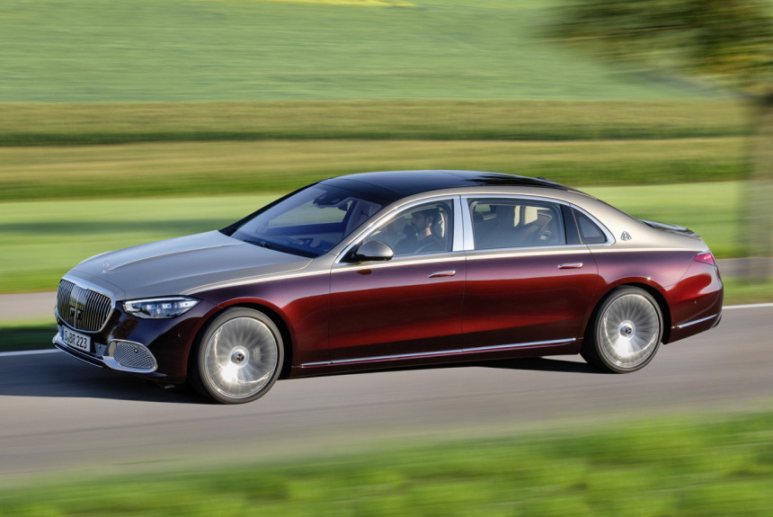

Онлайн блогАВТОМОБИЛИЕЙ И МОТОЦИКЛОВ
-

Новый Mercedes-Maybach S-класса: Z вместо X
Возрожденный Maybach как отдельный бренд успеха не добился: за десять лет удалось продать немногим более трех тысяч седанов Maybach 57 и 62. Но перезагрузка и новый статус суббренда оказались успешными: за пять лет выпущено более 60 тысяч удлиненных седанов Mercedes-Maybach S-класса! Причем Россия стала одним из ключевых рынков для модели (наряду с Китаем, Германией, США и Южной Кореей): у нас на Майбахи приходится более четверти продаж S-класса. Словом, такая бизнес-модель себя оправдала на все сто, поэтому новый Mercedes-Maybach не заставил себя долго ждать: топ-версию показали сразу после базовой модели серии W/V223, которая еще даже не успела добраться до дилеров.Рецепт создания Майбаха на базе S-класса ничуть не изменился: профиль с увеличенными задними дверями и дополнительными окошками в задних стойках кузова прежний. Хотя если у старой модели X222 колесная база была растянута на 200 мм (относительно длинной версии V222), то у нового Майбаха с индексом Z223 прибавка составила только 180 мм. В итоге — 3396 мм между осями против 3365 мм у предшественника. А длина машины со сменой поколения выросла едва заметно — с 5453 до 5469 мм.Снаружи Maybach отличается от исходного S-класса другой решеткой радиатора, дополнительными шильдиками и оригинальными колесами (диаметром 19, 20 или 21 дюйм), а выдвижные дверные ручки включены в базовую комплектацию, тогда как для обычных седанов это опция. Также за доплату можно заказать двухцветную окраску кузова, недоступную стандартному S-классу.
Технические характеристики Mercedes-Maybach S-Class Комплектация S 450 S 560 S 650 Двигатель V6 V8 V12 Объем, л 3,0 4,0 6,0 Мощность, л.с. 367 469 630 Крутящий момент, Нм 610 700 1000 Трансмиссия 9G-Tronic 9G-Tronic 7G-Tronic Plus Привод 4Matic 4Matic задний Разгон до 100 км/час, с 5,9 4,9 4,7 Максимальная скорость, км/час 250 250 250 Расход топлива Mercedes-Maybach S-Class По городу, л 14,4 15 20,3 По трассе, л 6,7 7,6 10,4 Смешанный цикл, л 9,8 10,4 14 Выброс СО2, г/км 231 237 320 Снаряженный вес, кг 2255 2370 2400 А еще в качестве опции для Майбаха предложены самые продвинутые фары Digital Light, которые могут «рисовать» на дороге подсказки для водителя в виде стрелок и символов. В каждой фаре установлены три мощных диода и матрица из 1,3 млн микрозеркал, управляя которыми электроника создает «изображение».Технически новый Mercedes-Maybach полностью унифицирован с обычным S-классом. У него штатная пневмоподвеска, за доплату можно установить активную гидропневматическую подвеску E-Active Body Control и полноуправляемое шасси (оно уменьшает диаметр разворота на два метра), а в 2021 году появится еще и Drive Pilot, то есть трассовый автопилот.